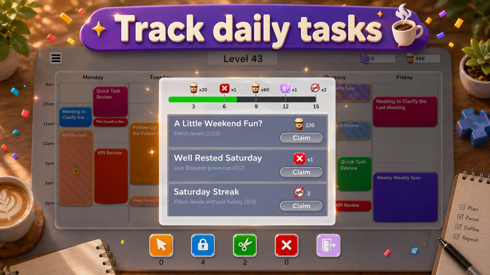

What fits into a short break?
We compared the unit of play and the natural stopping point. Blueberry Basement makes Meeting Mayhem, which is included in the list. The session suggestions are based on game rules and developer descriptions. They are estimates, with no timed Android playtest.
| Game | What to try in a break | Where to stop |
|---|---|---|
| Flow Free | One small Free Play board | A completed board is a clear stopping point. Save Time Trial for a longer break. |
| Two Dots | One main-map level | Stop after the result screen. Longer event chains are a different commitment. |
| Unblock Me | One starter board in Relax mode | The run ends when the red block reaches the exit. |
| Sudoku.com | One easy grid, or part of a harder one | Allow extra time for a full grid. Treat a harder puzzle as something to come back to. |
| Meeting Mayhem | One early calendar | Stop once the clashes are cleared. A win-streak mission can span several levels. |
| Infinity Loop | One loop layout | Use the completed loop as your stopping point. |
| Blockudoku | One run or a short placement practice | A good score run lasts until you run out of moves and can outlast the break. |
| Brain It On! | A few attempts at one physics challenge | Stop between attempts if the solution takes longer than expected. |
| Puzzledom | One puzzle in a familiar mode | Pick a single mode and stop after its board clears. |
| KAMI 2 | One paper-folding color puzzle | Finishing and replaying for a better solution are separate time commitments. |
All ten games are free to install. Their Google Play listings disclose ads and in-app purchases. Exact ad placement and paid extras can vary, so check the listing before downloading.
Want a reason to come back tomorrow? See our Android puzzle games with daily challenges and missions. To play without installing an app, try these quick browser games.
1. Flow Free
Flow Free is one of the cleanest examples of a short-session mobile puzzle. Connect matching colors, fill the board, and avoid crossing paths. A single puzzle can take seconds, but harder boards still reward careful planning.
Best for: players who like simple rules, clear boards, and lots of bite-sized logic puzzles.
2. Two Dots
Two Dots is a polished dot-connecting puzzle game with a soft visual style and a huge amount of content. The basic action is approachable, but the objectives and board layouts give it more structure than a plain color-matching game.
Best for: players who want casual puzzles with progression, events, and a more produced mobile game feel.
3. Unblock Me
Unblock Me is a classic sliding-block puzzle about freeing the red block from a crowded board. It is easy to understand instantly, and the challenge comes from sequencing moves efficiently.
Best for: players who like old-school logic puzzles, spatial reasoning, and move-by-move planning.
4. Sudoku.com
Sudoku.com brings the classic number puzzle to Android with difficulty options, hints, daily puzzles, and offline play. It is not always as short as the other games here, but easy puzzles and daily challenges can work well as a focused break.
Best for: players who want a familiar logic puzzle with a lot of difficulty control.
5. Meeting Mayhem
Meeting Mayhem is a free Android calendar puzzle game about fixing messy schedules. Instead of matching gems or solving numbers, you move meetings into better time slots, clear overlaps, work around locked events, and complete daily tasks.
Its strength is the theme-mechanics match. A crowded calendar already feels like a puzzle, so the rules make sense quickly: overlaps are bad, open slots are useful, and long meetings need room. That makes it a good fit for players who enjoy organizing, sorting, and making a chaotic board feel tidy.
Best for: players who like logic puzzles, organizing games, and unusual puzzle themes.

Try Meeting Mayhem
Meeting Mayhem is free on Android and opens directly on the official Google Play Store listing.
Open Meeting Mayhem on Google Play6. Infinity Loop
Infinity Loop is a relaxing connection puzzle about rotating pieces until they form continuous loops. It is less about pressure and more about cleaning up visual disorder, which makes it a natural fit for low-stress puzzle breaks.
Best for: players who want calm logic puzzles, simple touch controls, and a zen-like rhythm.
7. Blockudoku
Blockudoku combines block placement with a sudoku-like 9x9 grid. You place shapes, clear lines and squares, and try to keep the board open for future pieces.
Best for: players who enjoy block puzzles, high-score chasing, and spatial planning.
8. Brain It On!
Brain It On! is a physics puzzle game where you draw shapes to solve challenges. The fun comes from experimentation: there are often multiple solutions, and a messy-looking idea can sometimes be exactly what works.
Best for: players who like creative problem solving, physics toys, and puzzles that allow more than one answer.
9. Puzzledom
Puzzledom is a collection of logic puzzle types, including connect, blocks, rolling ball, escape, and other familiar formats. Its biggest advantage is variety: if you get tired of one puzzle style, there is another nearby.
Best for: players who want a puzzle sampler instead of one focused mechanic.
10. KAMI 2
KAMI 2 is a color-flooding puzzle where the goal is to turn each paper-like board into a single color in as few moves as possible. It is elegant, visual, and more strategic than it first appears.
Best for: players who like handcrafted-feeling puzzles, color logic, and chasing perfect solutions.
Which one should you try first?
If you want the cleanest pure logic board, start with Flow Free or Unblock Me. If you want a more modern casual game wrapper, try Two Dots. If you want something calming, try Infinity Loop or KAMI 2. If you want a familiar classic, Sudoku.com is the safest pick.
If you want a puzzle game with an unusual theme, try Meeting Mayhem directly from Google Play. It is the list entry for players who like the feeling of sorting, planning, and turning a messy day into a clean schedule.